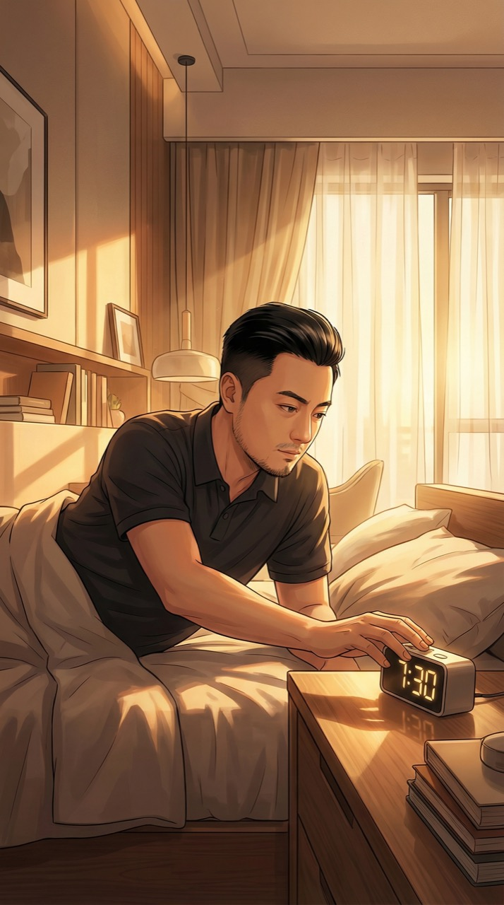
闹钟在7:30准时响起。深圳三月的晨光穿过窗帘缝隙，在被子上画出一道金色的线。
又是新的一天……路演日。今天必须搞定赵鹏飞。
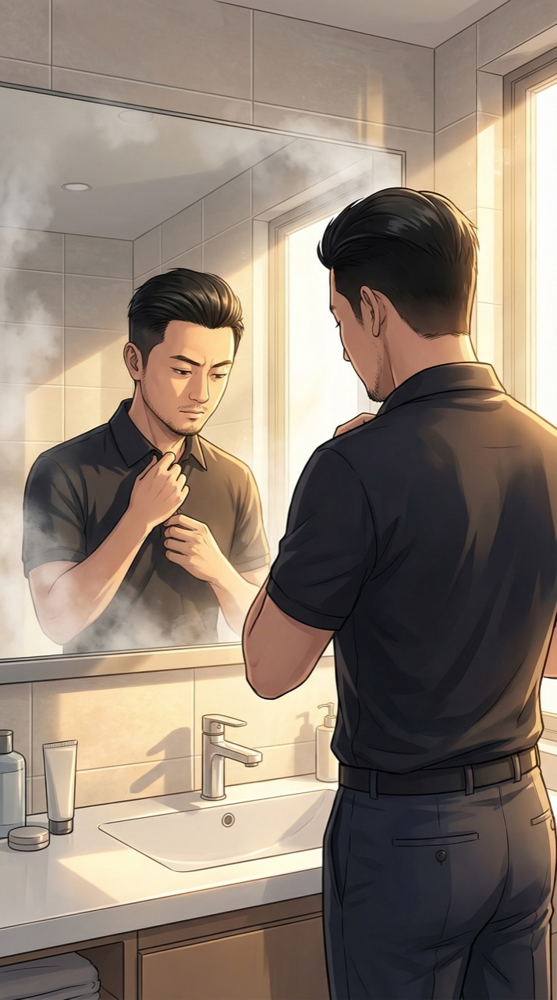
我在镜子前整理深色POLO衫的领口，对着镜子里那个略显疲惫的自己深吸一口气。
融资路演，三个月准备，成败在此一举。
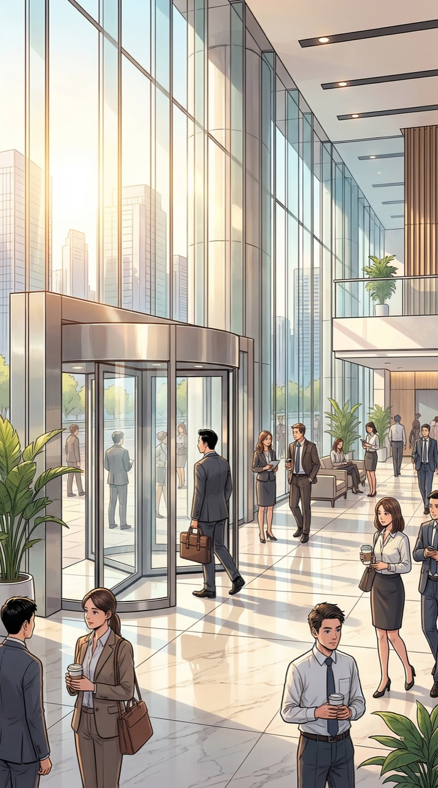
深圳科技园的写字楼大厅，玻璃幕墙折射出刺眼的光。我推开旋转门，夹着电脑包，步子不自觉地加快了。
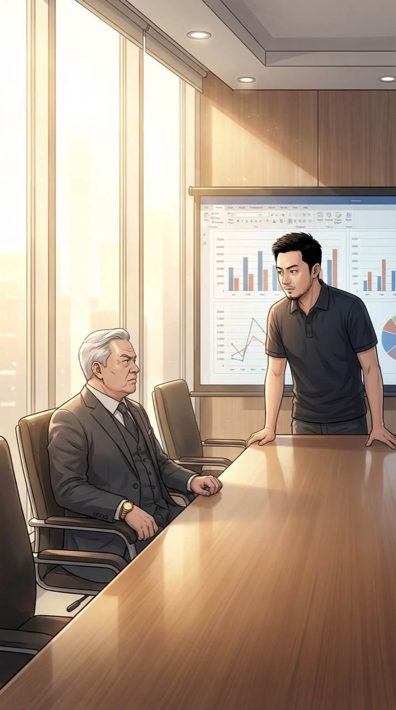
会议室里，空调开得很足。赵鹏飞——鼎辉资本的合伙人，花白短发，三件套西装，左手腕上的金表在灯光下格外扎眼。
他双手交叉放在桌上，连我的PPT第一页都没看完，嘴角就带了一丝不屑。
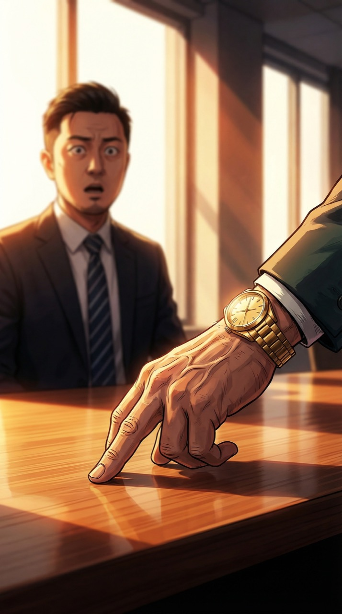
我脑子一片空白。精心准备的话术，一个字都想不起来。
完了。
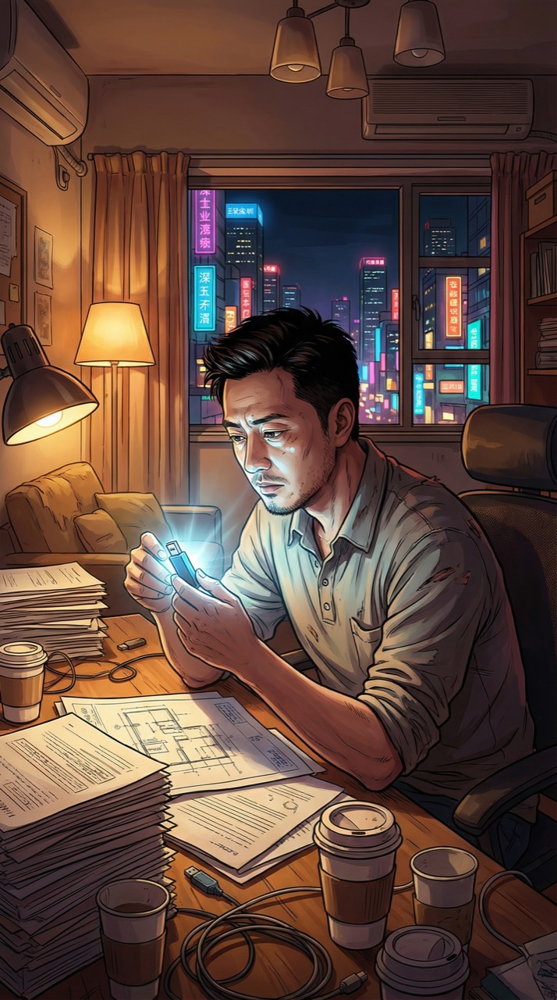
深夜。我瘫在出租屋的桌前，面前散落着被揉皱的BP文件。路演失败了。彻底的。
桌角有个USB——团队散伙前，老王留下的，说是"最后的礼物"。我一直没打开过。
不知道为什么，今晚我把它插进了电脑。
蓝光从USB中喷涌而出——
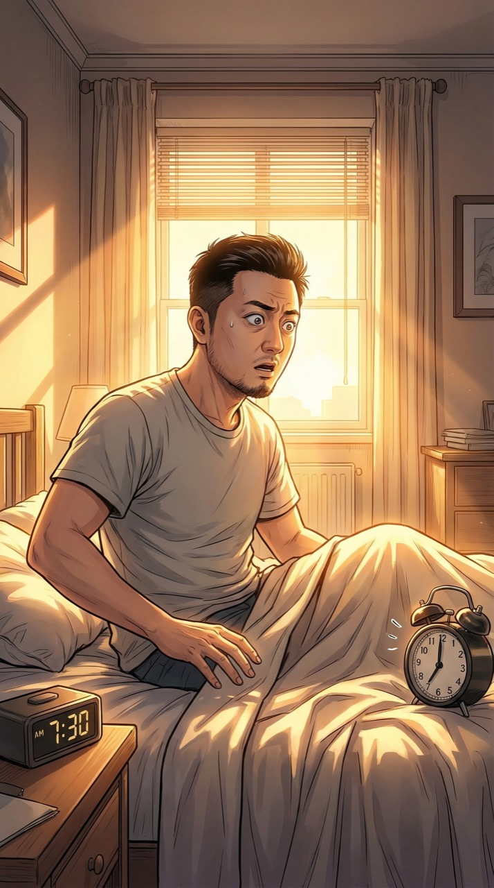
闹钟。7:30。同样的晨光，同样的角度，同样的——
等等。这不对。今天……不是已经过去了吗？
我猛地坐起来，心跳快得像要从嗓子眼蹦出来。
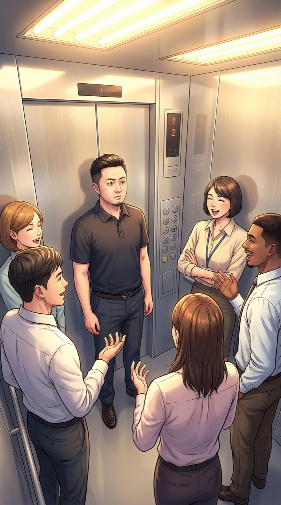
电梯里，隔壁工位的小刘在跟人聊昨天——不对，"今天"——的热搜。一模一样的对话，一模一样的语气。
我是在做梦？还是……真的回到了昨天？
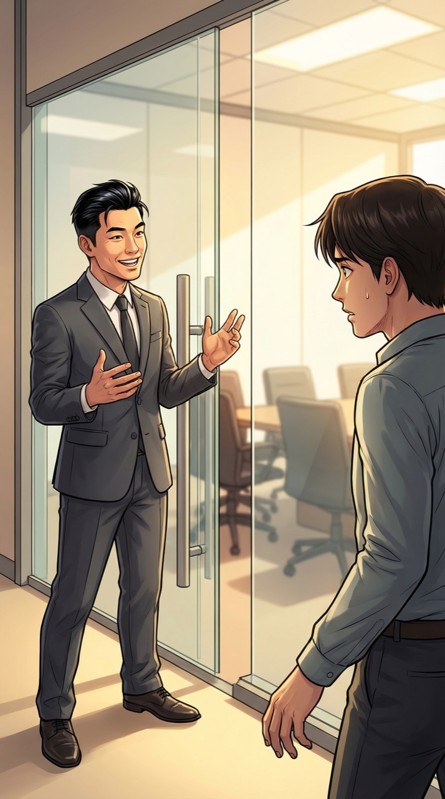
会议室门口，Kevin出现了。油亮的发型，招牌式的职业微笑，张口就来：
这句话……我听过。一字不差。我不是在做梦。
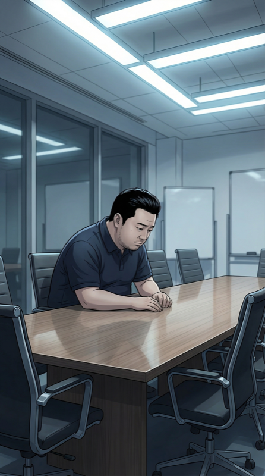
等我赶到15楼，迟到了整整20分钟。赵鹏飞看了一眼手表，连抬头都没有。
路演。又。失败了。
但这次不一样。因为我知道了——我可以重来。
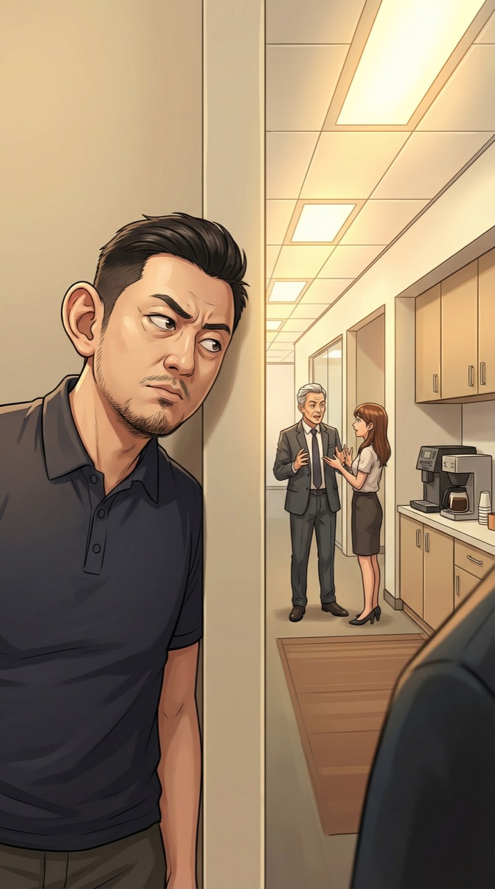
第三次循环。我不急着去路演了。我蹲在茶水间拐角，像个三流间谍一样偷听赵鹏飞和助理的对话。
原来如此！他儿子也在做AI！怪不得他一上来就否定我——不是因为我不行，是因为我是他儿子的竞品！
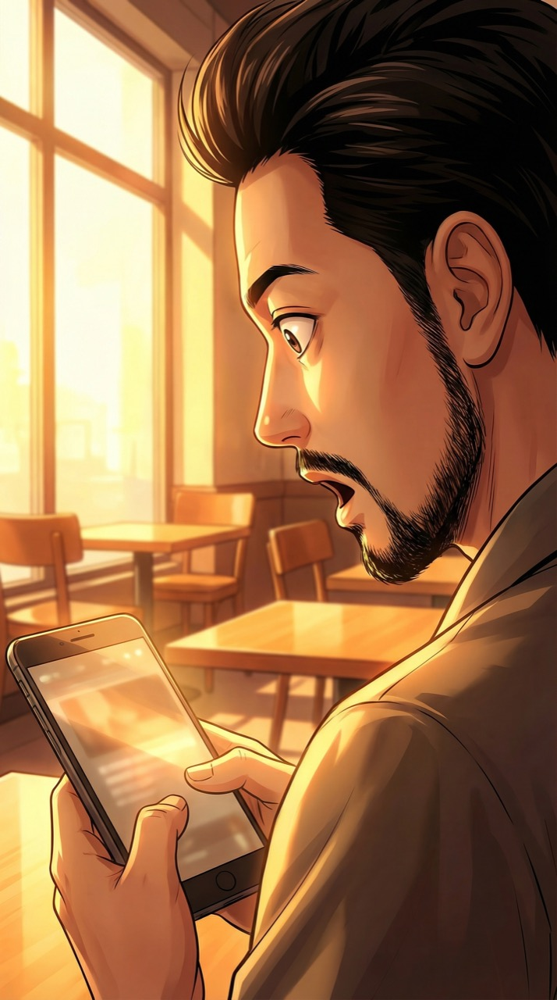
我掏出手机疯狂搜索。赵鹏飞的儿子，赵逸凡，95后，海归，公司叫"灵犀AI"，做的方向跟我们有80%重叠。
难怪……难怪他那天问的每个问题都像在帮他儿子做竞品调研。老狐狸。
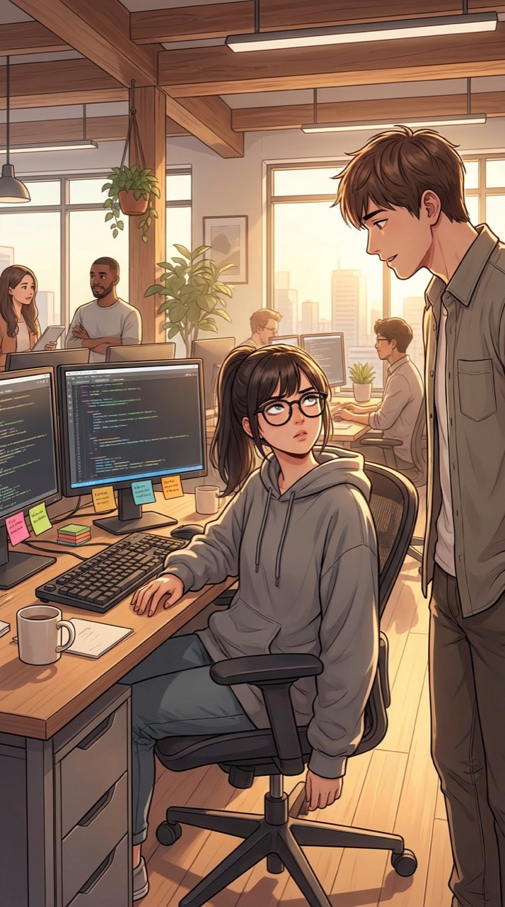
林薇翻着白眼说完这句话——这是她每天固定的"关心"。我已经听了三遍了。
到第五次循环，我要提前把她这句话接出来，看看她什么反应。
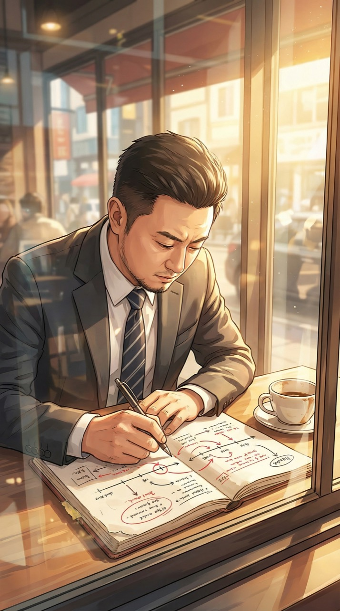
咖啡馆，窗边。我在笔记本上画满了时间线和箭头：7:45前台打翻咖啡，8:00 Kevin改会议室，8:15赵鹏飞的助理上15楼，9:00路演开始……
这一天的每一分钟，都被我拆解成了变量。
我要用这些变量，构建一个完美的路演日。
7:44。我站在前台旁边，手里攥着一把纸巾。
7:45。小姐姐果然手一抖——咖啡杯倾倒——
我纸巾已经递到了她面前。
因为你已经在我面前打翻了三次了，姐姐。
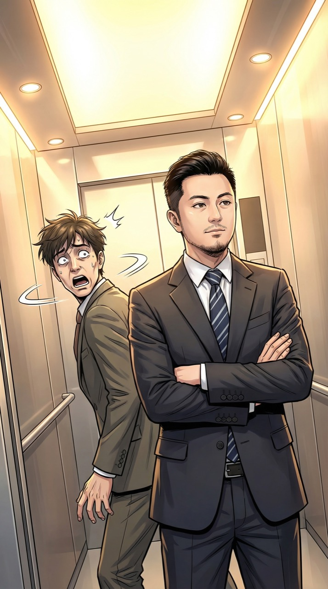
电梯里，一个路人正准备跟同事说"今天天气不错"——
他整个人都僵住了，像看见了鬼。
抱歉兄弟，你已经在我面前说了四遍了。
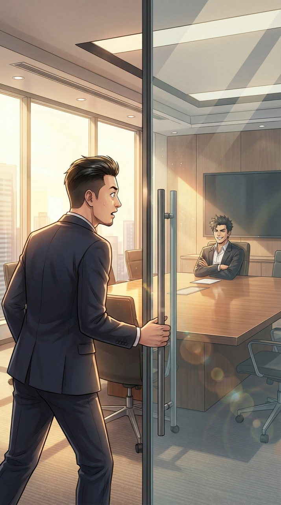
8:00整。Kevin推开会议室的门，准备通知我临时换地方——
然后他看到我已经坐在主位上了，投影仪打开，PPT调到第一页，矿泉水摆好。
这次，我来掌控节奏。
路演进行到第15分钟。这次我没有等赵鹏飞问那个致命问题——我主动先说了。
赵鹏飞微微点头。第一次。
四次循环。就为了这一个点头。
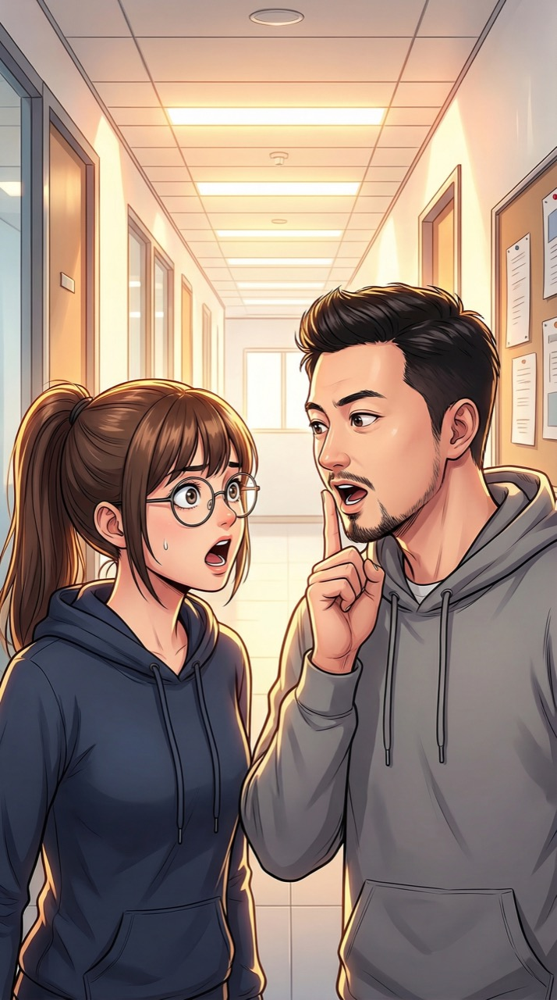
午饭后，林薇走过来。她张嘴，刚吸了一口气——
林薇的表情堪称经典——嘴巴张着合不上，眼镜差点从鼻梁上滑下来。
不，是读了五遍。
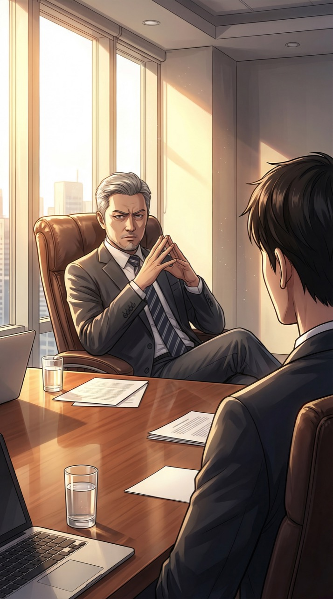
循环5。技术层面我已经完美了——每个数据、每个论点、每个反驳都精准到秒。
但赵鹏飞往后靠在椅背上，说了一句我没有预料到的话。
他说得没错。我确实在演。因为我已经排练了五遍。
循环6。赵鹏飞又说了那句"你在演"。
我低头看着自己交叠的双手，指关节有点发白。
他看穿了。不管我演技多好、数据多准、回答多完美——他看穿了。因为"完美"本身就是最大的破绽。
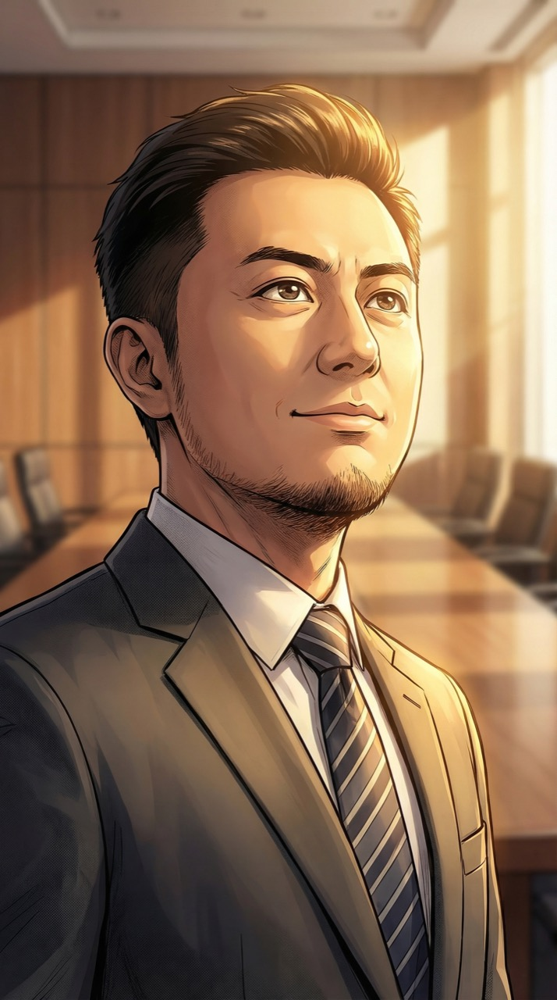
我抬起头，直视赵鹏飞的眼睛。没有数据，没有话术，没有准备好的金句。
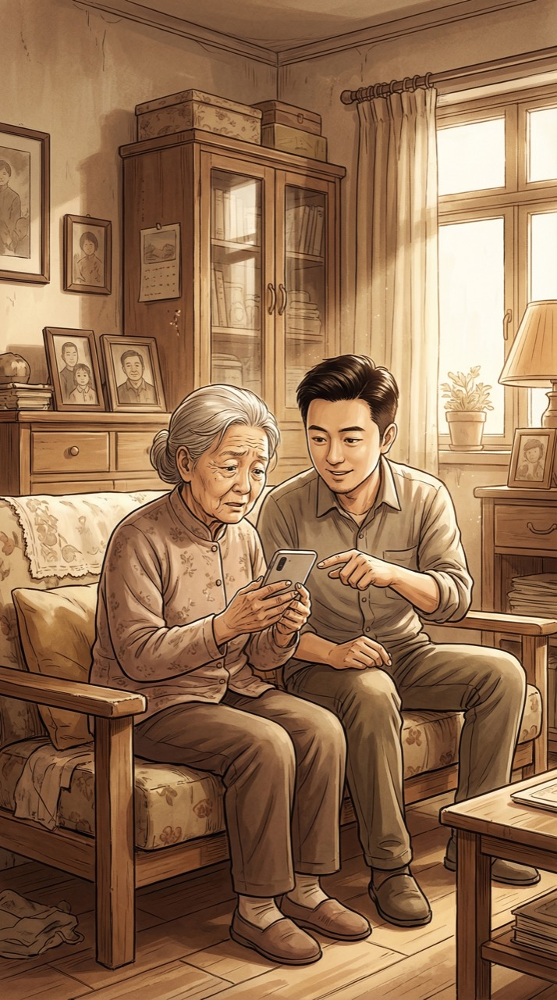
我说起了我妈。她今年68了，用不来智能手机。每次视频通话都要我远程教她点哪个按钮，教了七八遍还是不会。
有一次她打来电话，说想看我发的朋友圈照片，但翻了半天找不到。电话那头沉默了很久，她小声说了一句：
那天晚上我在深圳的出租屋里哭了很久。第二天开始写第一行代码——一个让老年人不需要学习就能用的AI助手。
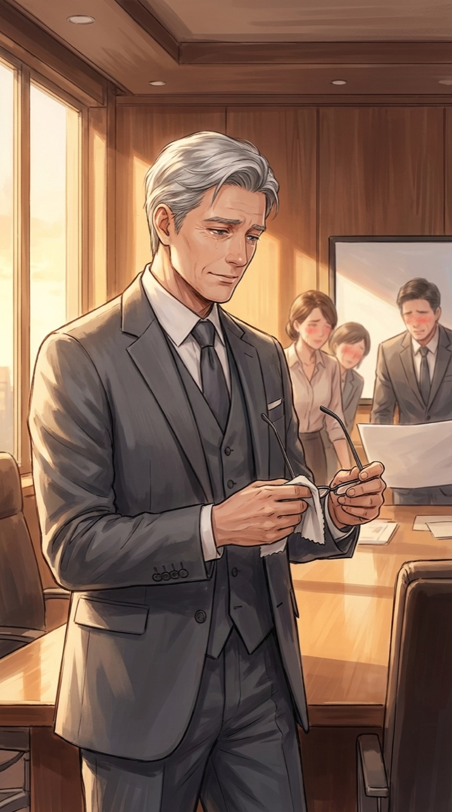
会议室里安静极了。
赵鹏飞摘下眼镜，慢慢擦拭。灯光下，我看到他的眼圈红了一瞬——只有一瞬。
他重新戴上眼镜，看着我，第一次露出了不带任何商业算计的表情。
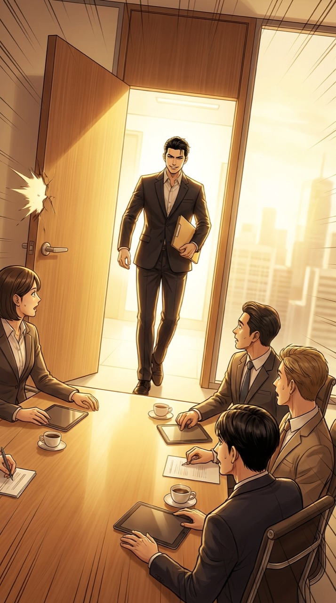
就在赵鹏飞准备拿出TS的时候——门被推开了。
Kevin走进来，手里拿着一份文件，笑容比平时还灿烂三分。
灵犀AI。赵逸凡。赵鹏飞的儿子。
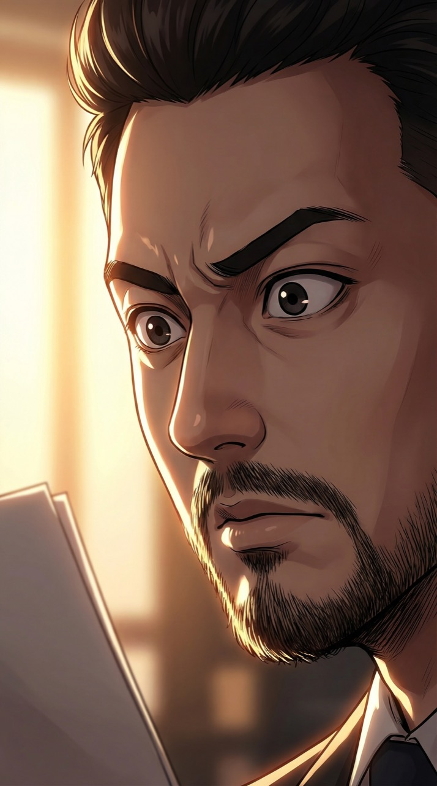
我看到了那份文件上的公司名字。六次循环搜集的情报告诉我：赵逸凡的公司有用户数据，但核心算法不行——而我们恰好相反。
我站了起来。
赵鹏飞愣了三秒。然后他做了一件事——
他笑了。不是那种商人式的精明笑容，是真的、发自内心的大笑。
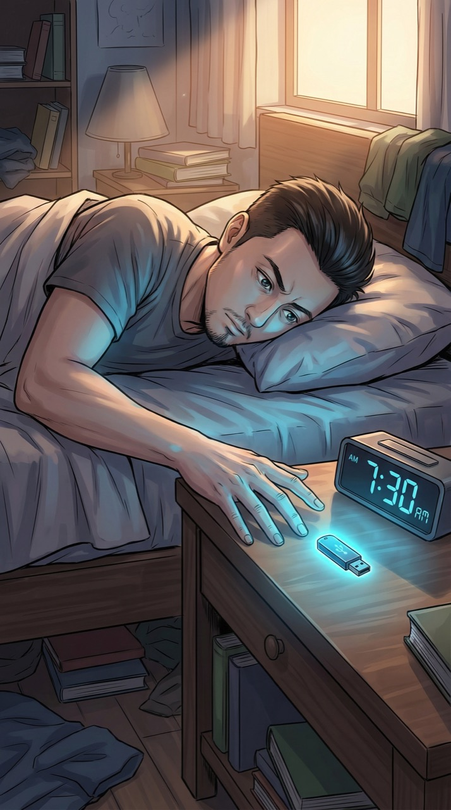
TS签了。握手、合影、庆祝。林薇难得地笑了，说"老板你今天终于不像在演了"。
我以为一切结束了。
第二天早上。闹钟。7:30。
同样的晨光。同样的角度。
我翻身看向床头柜——USB还在那里，发着微弱的蓝光。
但上面多了一行字，像是被激光蚀刻上去的：